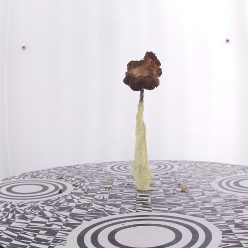
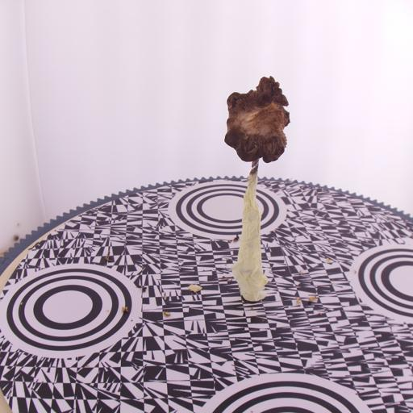
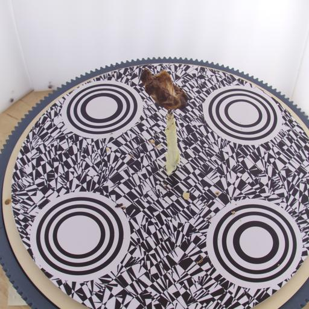
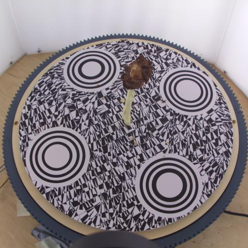

Neurips 2024


Abstract
State-of-the-art Neural Radiance Fields (NeRF) demonstrate impressive results for real-world scene reconstruction and have fueled the creation of 3D models through the ease of capturing multi-view data. In recent years, this has opened the possibility of building 3D generative models directly from the multi-view images. However, most of the existing image-based methods still either rely on synthetic datasets or operate in restricted categories, such as humans. This makes it difficult to evaluate their performance on real-world scenes, which might present unique challenges such as complex details or view-dependent effects. Unfortunately, existing real-world datasets often contain only a small number of entities in each class making them ill-suited for training generative models. We introduce a large-scale dataset of registered images, along with consistently lit close-range scans to close this gap and benchmark data-driven scene synthesis on the provided data. Counting more than 21,000 images of 427 entities of organic shapes, our dataset surpasses existing real-world benchmarks in terms of variations including local high-frequency details among shapes and appearances for the same class. We demonstrate our benchmark's unique capabilities by training various deep generative models on our data and showing the limitations of existing approaches.
Dataset
|
GB2_193 |
GB2_190 |
GB2_203 |
GB2_204 |
Shiitake3D contains over 21,000 views of 427 entities of organic shapes, as well as curated 3D reconstructions from these images. It consists of different species of mushrooms with rich geometric and appearance details, making them an ideal and challenging test bed for existing and future data-driven scene synthesis. We provide two separate scenarios: synthetic views generated from our reconstructed 3D shapes, and real-life multi-view images.
Please see ReadMe for detailed download instructions.
Capture Process
|  |  |  |  |
Models were captured on a rotating table using 4 cameras at different angles, allowing for high-fidelity reconstructions.
Benchmarks
Please refer to our paper for detailed results on synthetic and natural datasets.
License
MIT License.
Permission is hereby granted, free of charge, to any person obtaining a copy
of this software and associated documentation files (the "Software"), to deal
in the Software without restriction, including without limitation the rights
to use, copy, modify, merge, publish, distribute, sublicense, and/or sell
copies of the Software, and to permit persons to whom the Software is
furnished to do so, subject to the following conditions:
The above copyright notice and this permission notice shall be included in all
copies or substantial portions of the Software.
THE SOFTWARE IS PROVIDED "AS IS", WITHOUT WARRANTY OF ANY KIND, EXPRESS OR
IMPLIED, INCLUDING BUT NOT LIMITED TO THE WARRANTIES OF MERCHANTABILITY,
FITNESS FOR A PARTICULAR PURPOSE AND NONINFRINGEMENT. IN NO EVENT SHALL THE
AUTHORS OR COPYRIGHT HOLDERS BE LIABLE FOR ANY CLAIM, DAMAGES OR OTHER
LIABILITY, WHETHER IN AN ACTION OF CONTRACT, TORT OR OTHERWISE, ARISING FROM,
OUT OF OR IN CONNECTION WITH THE SOFTWARE OR THE USE OR OTHER DEALINGS IN THE
SOFTWARE.